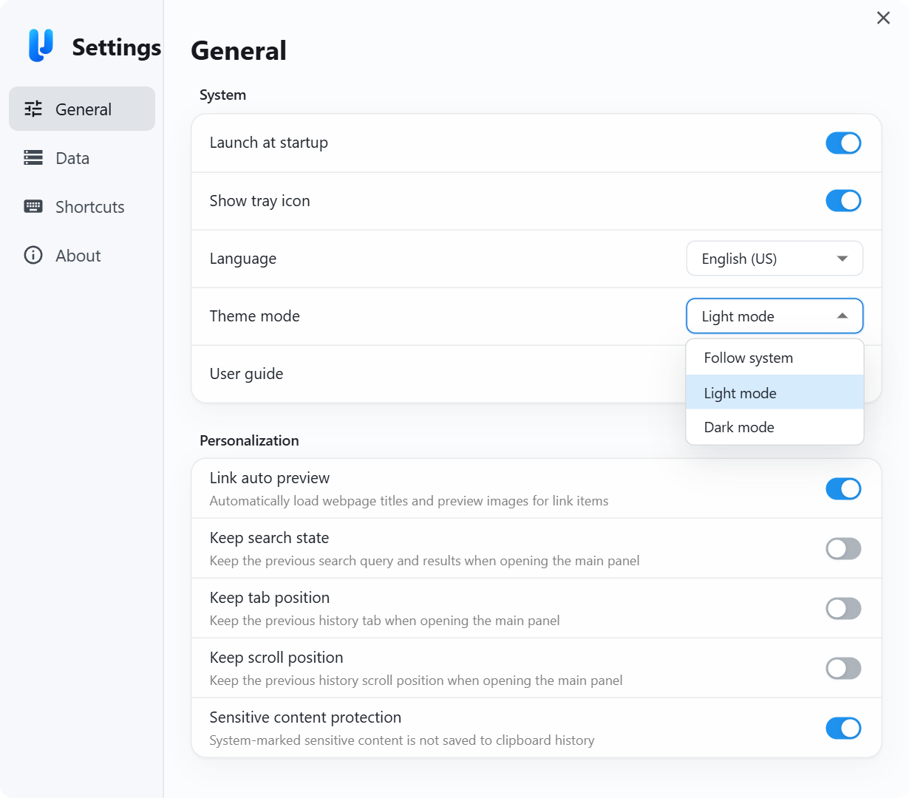

Text
Keep headings, lists, and tables intact, then paste with the original formatting or as plain text
- 01Layout, tables & links
- 02HTML / RTF + fallback
- 03Rich or plain-text paste
VP / 001Every copy, clearly visible
vPaste automatically sorts text, images, links, colors, and files into clear visual cards. Call it up anytime to browse, search, preview, and paste again
01One shortcut from any app
Call up your history and choose an item. Auto-paste sends it back to your app and closes the panel. Multi-display setups follow your active screen
02Visual clipboard history
Type, time, source app, and a useful preview live on every card. Even a long history stays easy to recognize and recover
03Every format, easy to see
Text, images, links, colors, and files are sorted automatically, with the context you need to recognize, search, preview, and reuse them
Keep headings, lists, and tables intact, then paste with the original formatting or as plain text
See the image in the card, inspect full detail, and export it whenever you need the file
Add page titles and preview images automatically, so a link is more than a bare URL
See the swatch and its value together, then convert between common color formats
Keep files, folders, and multi-file copies ready to preview, locate, or send again
05Work your way
Your theme, your shortcuts, your way of working

Light or dark · English or Chinese
Link previews · Remember your place
Storage location · Migration and cleanup
Call up the panel · Choose how to paste
06Local history, your control
vPaste stores clipboard history locally without uploading it to a server. Exclude selected apps and sensitive content from capture; enabling link previews sends requests to the linked pages
07Open source makes the promise inspectable
vPaste is GPL-3.0 open source. Its Windows and macOS desktop code, platform integrations, release history, and security policy are open for anyone to inspect
Browse clipboard history as cards, call it up fast, paste in one step